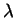

The method of stepwise enhancement (Lakhotia, [Lak89]) was originally conceived as an adaptation of stepwise refinement to Prolog. It was advocated as a way to systematically construct Prolog programs, which exploits Prolog's high-level features. The key idea underlying stepwise enhancement is to visualise a program or solution in terms of its central control flow, or skeleton, and techniques which perform computations while the control flow of the skeleton is followed. Techniques can be developed independently and combined automatically using the method of composition.
The most common data structure for logic programs is the list, and many programs are based on skeletons for traversing lists. A tutorial example of using stepwise enhancement to develop a simple program is given in Chapter 13 of (Sterling and Shapiro, [SS94]). In this section we give the basic list processing program as Program 1 for reference, and a (slightly) more elaborate example with binary trees.
is_list([]). is_list([X|Xs]) :- is_list(Xs).Program 1: A skeleton for list traversal (or definition of lists)
Programs 2a and 2b are skeleton programs for traversing binary trees with values only at leaf nodes (later we also use M-way trees with data in internal nodes). Program 2a, the left-hand program, does a complete traversal of the tree, while Program 2b, the right-hand program, traverses a single branch of the tree. Note that Program 2a can be viewed as a type definition of trees.
is_tree(leaf(X)). branch(leaf(X)).
is_tree(tree(L,R)) :- branch(tree(L,R)) :- branch(L).
is_tree(L), branch(tree(L,R)) :- branch(R).
is_tree(R).
Programs 2a, 2b: Skeletons for traversing a tree
Techniques capture basic Prolog programming practices, such as building a data structure or performing calculations in recursive code. Informally, a programming technique interleaves some additional computation around the control flow of a skeleton program. The additional computation might calculate a value or produce a side effect such as screen output. Syntactically, techniques may rename predicates, add arguments to predicates, add goals to clauses, and/or add clauses to programs. Unlike skeletons, techniques are not programs but can be conceived as a family of operations that can be applied to a program to produce a program.
A technique applied to a skeleton yields an enhancement. An enhancement which preserves the computational behaviour of the skeleton is called an extension.
We give examples of techniques. The two most commonly used techniques are the calculate and build techniques. They both compute something, a value or a data structure, while following the control flow of the skeleton. An extra argument is added to the defining predicate in the skeleton, and an extra goal is added to the body of each recursive clause. In the case of the calculate technique, the added goal is an arithmetic calculation; in the case of the build technique, the goal builds a data structure. In both cases, the added goal relates the extra argument in the head of the clause to the extra argument(s) in the body of the clause. Note that the terminology used in the stepwise enhancement literature tends to be procedural. Despite this, the resulting programs can be viewed in a declarative way and (in some cases) are reversible.
Two typical examples of the application of the calculate technique
are given as Programs 3a and 3b. Both are extensions of Program 2a which
traverses a binary tree with values at its leaves. The left-hand program
(3a) computes the product of the values of the leaves of the trees. The
extra argument in the base case is the value of the leaf node. In the
recursive case, the extra goal says that the product of a tree is the
product of its left subtree and its right subtree. The predicate
is_tree/1
has been renamed to prod_leaves/2. The right-hand program (3b), which
computes the sum of the leaves, is very similar, the only difference being
choice of names and the extra goal.
prod_leaves(leaf(X),X). sum_leaves(leaf(X),X).
prod_leaves(tree(L,R),Prod) :- sum_leaves(tree(L,R),Sum) :-
prod_leaves(L,LProd), sum_leaves(L,LSum),
prod_leaves(R,RProd), sum_leaves(R,RSum),
Prod is LProd*RProd. Sum is LSum+RSum.
Programs 3a, 3b: Extensions of Program 2a using the calculate
technique
Two enhancements of the same skeleton share computational behaviour. They can be combined into a single program which combines the functionality of each separate enhancement. Techniques can be developed independently and subsequently combined automatically. The (syntactic) operation for combining enhancements is called composition. This is similar in intent to function composition where the functionality of separate functions are combined into a single function. Program 4 is the result of the composition of Programs 3a and 3b.
prod_sum_leaves(leaf(X),X,X).
prod_sum_leaves(tree(L,R),Prod,Sum) :-
prod_sum_leaves(L,LProd,LSum),
prod_sum_leaves(R,RProd,RSum),
Prod is LProd*RProd,
Sum is LSum+RSum.
Program 4: The composition of two extensions
A different programming technique uses accumulators. The accumulator-calculate technique adds two arguments to the defining predicate in the skeleton. The first argument is used to record the current value of the variable in question and the second contains the final result of the computation. The base case relates the input and output arguments, usually via unification. One difference between calculate and accumulate-calculate is in the need to add an auxiliary predicate. Another is that goals and initial values need to be placed differently.
Program 5 shows the result of applying the accumulate-calculate technique to the tree traversal program, Program 2a. It computes the sum of the leaves of a binary tree and is comparable to Program 3b. In general, programs written with accumulator techniques will run more efficiently than the equivalent program written with calculate and build techniques, due to the way tail recursion is implemented in Prolog.
sum_leaves(Tree,Sum) :- accum_sum_leaves(Tree,0,Sum).
accum_sum_leaves(leaf(X),Accum,Sum) :-
Sum is Accum + X.
accum_sum_leaves(tree(L,R),Accum,Sum) :-
accum_sum_leaves(L,Accum,Accum1),
accum_sum_leaves(R,Accum1,Sum).
Program 5: Extension of Program 2a using the accumulate-calculate
technique
Program 6 is an example of the application of the accumulate-build technique, also applied to Program 2a. It builds an inorder traversal of the leaves of the tree. There is no explicit arithmetic calculation, rather lists built by unification in the base clause. There is one subtlety here. Accumulators build structures in reverse order and hence the right subtree is traversed before the left subtree in order to have the final list in the correct order. With commutative operations such as addition for integers the order is immaterial.
traversal(Tree,Xs) :- accum_leaves(Tree,[],Sum).
accum_leaves(leaf(X),Accum,[X|Accum]).
accum_leaves(tree(L,R),Accum,Sum) :-
accum_leaves(R,Accum,Accum1),
accum_leaves(L,Accum1,Sum),
Program 6: Extension of Program 2a using accumulate-build
The skeletons and techniques presented in this paper are all taken from Prolog, but stepwise enhancement is equally applicable to other logic programming languages, as discussed in Kirschenbaum, Michaylov and Sterling ([KMS96]). They claim that skeletons and techniques should be identified when a language is first used, in order to encourage systematic, effective program development. This learning approach should be stressed during teaching. They show that the skeletons and techniques for Prolog can be extended to constraint logic programming languages, notably CLP(), concurrent logic programming languages such as Flat Concurrent Prolog and Strand, and higher order logic program languages, in particular -Prolog (Nadathur and Miller, [NM88]).